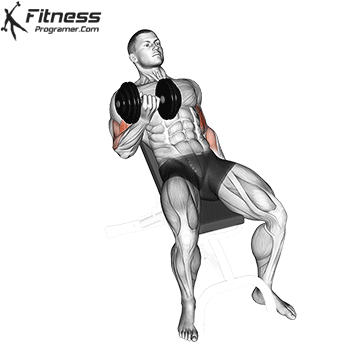
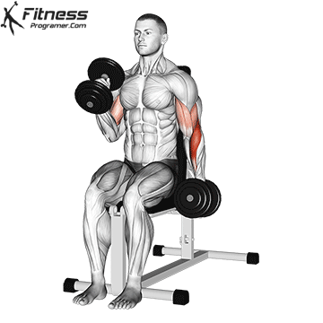
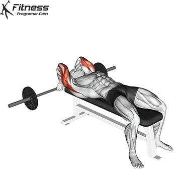

- Long Head:Kola onden ve yandan bakildiginda o yuksek "pazu tepesi"ni veren kisimdir.Dar tutuslarla ve kol govdenin arkasindayken hedeflenir.
- Short Head:Kolun ic kismina kalinlik ve genislik katar.Genis tutuslarla ve kol govdenin onundeyken calisilir.
- Brachialis:Biceps ile Triceps arasinda yer alan gizli guctur.Gelistiginde Bicepsi yukari dogru iterek kolun daha kalin gorulmesini saglar.
- Long Head(Triceps):Tricepsin en buyuk parcasidir,kolun arkasindan sarkan hacmi saglar.Kol basin uzerindeyken yapilan hareketlerle esnetilip calistirilir.
- Lateral Head:Arkadan bakildiginda o meshur "at nali" gorunumunu verir.
- Medial Head:Dirsek ekleminin heemn uzerindedir,genel itis gucu ve stabilite saglar.
Antrenman yaparken dikkat etmeniz gerekenler:
- Dirsekleri Sabitleyin:En yaygin hata,agirligi kaldirirken govdeyi sallamak ve dirsekleri ileri-geri oynatmaktir.Dirseklerinizi kaburgalariniza yapistirin;hareketi sadece on kolunuz hareket edecek sekilde yapin.
- Tricepse Oncelik Verin:Kolunuzun buyuk gorunmesinin istiyorsaniz enerjinizi sadece pzuya harcamayin.Triceps antrenmanina en az Biceps kadar(Hhatta bir tik daha fazla)onem verin.
- Tam Esneme ve Tam Sikistirma:Biceps hareketlerinde agirligi en alta kadar indirip kasi tamamen esnetin,tepe noktada 1 saniye sıkın.Triceps hareketinde ise alt noktada dirsegi kilitlercesine tam acin.
- Bilek Pozisyonuna Dikkat Edin:Duz bar ile yapilan Biceps curller bazi kisilerin bileklerinde agri yapabilir.Bu durumda Z-Bar veya dumbell kullanarak bilek sagligini korur.
Kol icin en iyi egzersizler:
- Incline Dumbell Curl:Bank 45 derece egimdeyken yapilir.Bicepsin uzun basini max esneterek muazzam bir tepe noktasi olusturur.
- Z-Bar Curl:Genel biceps kutlesi icin temel hareketlerden biridir.
- Hammer Curl:Dumbeller notr tutusla(avuc icleri birbirine bakacak sekilde)tutulur.On kolu hedefleyerek kol kalinligini arttirir.
- Skullcrusher:Arka kolun tum baslarini,ozellikle uzun ve yan basini yogun sekilde calistiran en entkili kutle hareketlerindendir.
- Dips:Vucut agirligiyla yapilan,hem Triceps hem de gogus ve omuz baglantisini guclendiren bilesik bir egzersizdir.





Kol kucuk bir kas grubu oldugu icin gogus ve sirt antrenmanlarinda da ikincil olarak aktif calisir.Bu yuzden asiri calistirilmaktan kacinmali,haftalik set sayilarini mantikli planlamali ve agirliklari zamanla kademeli olarak arttirmalisiniz.